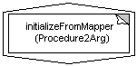
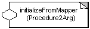

Previous TOC Next
Previous TOC Next 
| ChiMu Documentation Kernel Frameworks | Previous TOC Next |
| Basic Functors | Functor recompiler | Smart Functors | Notation |
Functors are objects that model operations that can be performed. In their simplest form they are somewhat like function pointers: they allow a client to call an unknown method with a standard interface. Because functors are full-blown objects they can do quite a bit more than function pointers: they can record and take advantage of their own state as well as allowing references to other objects be used in the method execution. "Smart" functors can also allow the client to ask questions about what operations are available and what the functor requires for proper execution. Basic functors don’t provide this functionality but are easier to create which makes them more useful.
The basic functors are Interfaces with a single-method protocol that makes them easy to implement. They are about as close to having Smalltalk block simplicity as is possible with Java right now. Functors vary on two axes: what type of value they return and how many arguments they take. There are three types of Functors based on return value:
|
Type |
Returns |
Method Prefix |
|
Procedure |
nothing (void) |
execute |
|
Function |
An Object |
value |
|
Predicate |
A boolean |
isTrue |
There can be any number of parameters, but currently there is support for only 0, 1, and 2 argument functors. All functors only take Objects as parameters.
|
# |
Type Suffix |
Method Suffix |
|
0 |
0Arg |
() [none] |
|
1 |
1Arg |
With(Object arg1) |
|
2 |
2Arg |
With_with(Object arg1, Object arg2) |
The following are some declarations of the different basic functors.
public interface Procedure0Arg {
public void execute();
}
public interface Function1Arg {
public Object valueWith(Object arg1);
}
public interface Predicate2Arg{
public boolean isTrueWith_with(Object arg1, Object arg2);
}
Calling the above functors might look like this:
boolean exampleMethod (Procedure0Arg procedure, Function1Arg function, Predicate2Arg predicate) {
procedure.execute();
return predicate.isTrueWith_with("Hi There", function.valueWith(" Hi "))
}
To use a BasicFunctor you can either implement the functor’s interface in a standard Class or use Java 1.1’s anonymous classes to create functors where you need them.
Using the standard Class implementation looks like this:
class MyProcedure implements Procedure0Arg {
public void execute() {
System.out.println("We're here");
}
}
class MyTrimFunction implements Function1Arg {
public Object valueWith(Object arg1) {
return ((String) arg1).trim();
}
}
class MyStartsWithPredicate implements Predicate2Arg {
public boolean isTrueWith_with(Object arg1, Object arg2) {
return ((String) arg1).startsWith((String) arg2);
}
}
And creating one of these functors would look like this:
Procedure0Arg myProcedure1 = new MyProcedure();
Using the anonymous class method to define and create the Functors in one statement is a bit more obscure but is also much shorter and more convenient. It looks like this:
new Procedure0Arg () {public void execute() {
System.out.println("We’re here");
}};
new Function1Arg () {public Object valueWith(Object arg1) {
return ((String) arg1).trim();
}};
new Predicate2Arg () {public boolean isTrueWith_with(Object arg1, Object arg2) {
return ((String) arg1).startsWith((String) arg2);
}};
Because using anonymous classes for Functors is still a bit noisy, we have a recompiler for Java that allows you to use "Blocks" (very similar to Smalltalk blocks) as a more concise functor creation expression. A block’s syntax is:
‘[’ FunctorArgumentList ‘|’ BlockStatements ‘]’
where a ‘^’ in front of an argument specification indicates the return type of the "block".
Returning to the above examples, we could call the original "exampleMethod" as follows:
if (exampleMethod (
[^void | System.out.println("We're here");],
[String arg1 | return arg1.trim();],
[^boolean, String arg1, String arg2 | return arg1.startsWith(arg2)]
)
) System.out.println("Found the string!");
where each block would expand to the above anonymous functor creation statement respectively (except there is some auto casting going on).
Smart functors have the same basic abilities as basic functors but have a richer protocol that allows the client of the functor to inquire about the functors capabilities and requirements. For example, a SmartFunctor can answer the question of how many arguments it requires and whether it returns a value.
|
Since functors are a combination of an object and a function (block of code), the notation for a functor should be a combination of an object and a block of code. Because the function is within the object we get the notation to the right. The first text line describes the Class (the functionality) of the Functor and the second line describes the parent type (the protocol) of the Functor. This symbol is frequently unwieldy because it is large to begin with and enlarges significantly as text is added. |
 |
|
The second notation to the right is also acceptable. For this notation the objectness of the functor is visible but less dominant in area. This is generally a better symbol because it is more visually distinct and scales much better. The ‘object’ can be moved around along the edge of the ‘function’. |
 |
 |
Previous TOC Next | |
| Copyright (c) 1997, ChiMu Corporation. All Rights Reserved.
Confidential and Proprietary. Version R1.0.1. |